- Instellen printer/ scanner
- Zoek printers/scanners
- Voeg printer/scanner handmatig toe
- Bekijk en wijzig printer/scanner informatie
- Verplaats of verwijder printer/scanner uit de lijst
- Instellen gebruikersinformatie
- Applicatie instellingen
- E-mail instellingen
- Scannen
- Afdrukken
- Printen van een opgeslagen document in deze applicatie
- Printen van een foto
- Webpagina's afdrukken
- Printen van E-mails
- Bijlage toevoegen aan een email
- Versturen naar een applicatie
- Organiseren bestanden
- Wijzigen bestands- en mappenlijst
- Zoeken van bestanden/ mappen
- Voorbeeldweergave van een bestand
- Wijzig de naam van een bestand/map
- Verplaats bestanden/mappen
- Verwijder bestanden/mappen
- Maak een map aan
- Printen vanuit een externe applicatie
- Website voor ondersteuning
Instellen printer/ scanner
Instellen van de printers en scanners in deze applicatie waar op geprint wordt en data naartoe wordt gescand.Zoek printers/scanners
- Tik op "Instelling" bovenaan het menuscherm.
- Tik op "Instellen printer/ scanner."
- Tik op "Zoek printers/ scanners." Printers en scanners verbonden met het netwerk worden automatisch gezocht.
(Opmerking) De printers/ scanners moeten aangesloten zijn op hetzelfde segment van het netwerk als waarmee uw apparaat is verbonden. Indien u printers/ scanners gebruikt op een ander segment van het netwerk. Voeg de printer/scanner handmatig toe - Printers en scanners die automatisch worden gezocht via het netwerk worden weergegeven in een lijst.
"Productnaam"en "Locatie" opgehaald van een printer/ scanner wordt weergegeven met het format van "Productnaam(locatie)" of "Productnaam(IP adres)"in de bovenste regel en het "IP adres" wordt weergegeven in de onderste regel.
(Opmerking) De display weergave ("Productnaam (Locatie)" of "Productnaam(IP adres)") in de lijst kan worden aangepast in de Applicatie instellingen. "SHARP" gecombineerd in de "Productnaam" verkregen van de printer/ scanner wordt niet weergegeven.
Voeg printer/scanner handmatig toe
- Tik op "Instelling" bovenaan het menuscherm.
- Tik op "Instellen printer/ scanner."
- Tik op "Voeg handmatig toe" indien u wenst om printers/ scanners toe te voegen die zich niet op hetzelfde gedeelte van het netwerk bevinden als uw apparaat. (En die niet kunnen worden toegevoegd via Zoek printers/ scanners).
- De volgende instellingen kunnen worden ingesteld onder "Printer/Scanner informatie" en "Bedieningsinstellingen".
Tik op "Opslaan" om de instelling op te slaan. Indien u de toevoegen wenst te annuleren, druk dan op de fysieke Terug/ Back toets buiten het scherm voordat u tikt op "Opslaan".Naam Voer naam de naam, IP in om een printer/ scanner toe te voegen. Indien de naam niet wordt ingevoerd, wordt het IP adres gebruikst als naam. IP adres Voer het IP adres van de printer/ scanner in. Dit is een vereist veld.
(Opmerking) Het IP adres dat reeds handmatig is ingegeven, kan niet worden ingevoerd.Poortnummer Voer een poortnummer van de printer/ scanner in. Dit is een vereist veld.
(Opmerking) Het poortnummer is noodzakelijk om te printen vanuit deze applicatie. Voer hetzelfde poortnummer in zoals geconfigureerd op de printer. Indien een afwijkend poortnummer is ingevoerd is het niet mogelijk om te printen vanuit deze applicatie.
Om het poortnummer van de printer te controleren,
Indien "Gebruik Raw print" in toepassingsinstellingen niet is aangevinkt: Selecteer [Toepassingsinstellingen] - [Instellingen Printen vanaf de PC] via de webpagina van de multifunctional. Het standaard poortnummer voor zowel de printer als deze applicatie is 21.
Indien aangevinkt: Zie [Netwerkinstellingen]-[Printerpoort instellingen]-[RAW] tab in de printer’s webpagina. Het standaard poortnummer is 9100.Selecteer deze printer/ scanner als standaard Indien "Selecteer deze printer/ scanner als standaard" is aangevinkt, wordt deze printer/ sacnner als standaard gebruikt wanneer u de "Print"of "Scan" functie" gebruikt.
(Opmerking) "Selecteer deze printer/scanner" kan niet worden geconfigureerd, indien de functie "automatisch selecteren van printer/scanner aan staat in de applicatie instellingen.
Bekijk en wijzig printer/scanner informatie
- Tik op "Instelling" bovenaan het menuscherm.
- Tik op "Instellen printer/ scanner."
- Geregistreerde printers en scanners worden in een lijst weergegeven.
Het icoon geeft de automatisch toegevoegde printers/ scanners weer.
Het icoon geeft de printers/scanners welke handmatig zijn toegevoegd weer. - Tik op een printer/ scanner om de informatie weer te geven.
- De informatie over de geselecteerde printer/ scanner wordt weergegeven. Alle items, uitgezonderd het IP adres, kunnen worden gewijzigd.
(Opmerking) Voor automatisch toegevoegde printers/scanners, kan het IP adres niet worden gewijzigd.
Voor handmatig toegevoegde printers/scanners, kan de productnaam en locatie niet worden gewijzigd. Productnaam en locatie velden worden automatisch gevuld wanneer de applicatie een eerste contact maakt met een printer/ scanner. - Wanneer "scannen vanaf een mobiele apparaat" beschikbaar is, de volgende extra in.stellingen zijn beschikbaar in "Bedieningsinstellingen"
Scan van uw mobiele apparaat Wanneer ("I(AAN)" geselecteerd is, configureer de scaninstellingen en scan vanaf uw mobiele apparaat. Weergave naam Weergave naam wordt weergegeven met een verificatie code op zowel het bedieningspaneel van de scanner als op uw mobiele apparaat om zeker te zijn van de juiste scanner. Verificatie codes worden automatisch gegenereerd Wanneer ("I(AAN)" geselecteerd is, wordt automatisch een verificatiecode gegenereerd. Wanneer uitgeschakeld (selecteer "O(UIT)"), dan moet u een verificatie code invoeren in het daarvoor bestemde veld. Verificatie code Verificatie code wordt weergegeven met een weergave naam op zowel het bedieningspaneel van de scanner als op uw mobiele apparaat om zeker te zijn van de juiste scanner. Reset instellingen Tik hier om de geconfigureerde scaninstellingen voor de laatst uitgevoerde scan te wissen. - Tik op "Opslaan" om de instellingen op te slaan.
Verplaats of verwijder printer/scanner uit de lijst
- Tik op "Instelling" bovenaan het menuscherm.
- Tik op "Instellen printer/ scanner."
- Geregistreerde printers en scanners worden in een lijst weergegeven.
- Tik op "Wijzig"
- Tik op 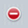 en tik daarna op "Verwijder" indien u wenst een printer/ scanner te verwijderen uit de lijst.
- Tik op en beweeg met uw vinger naar boven of beneden om de volgorde van printers/ scanners te wijzigen.
(Opmerking) Verwijderde printers/ scanners kunnen opnieuw worden toegevoegd met Zoek printers/scanners of Voeg printer/scanner handmatig toe.
Instellen gebruikersinformatie
Stel de gebruikersinformatie in om de scanbestemming op het display van de scanner weer te geven, wanneer deze applicatie de gescande informatie ontvangt van de scanner.- Tik op "Instelling" bovenaan het menuscherm.
- Tik op "Instellen gebruikersinformatie."
- "Profiel informatie" is de instelling vereist voor het registreren van de bestemming op de scanner tijdens het scannen. De volgende instellingen zijn beschikbaar:
Weergave naam Wordt weergegeven in het adresboek van de scanner als een scanbestemming. De standaard waarde is gelijk aan de standaardweergave is gelijk aan de waarde "Naam" zoals deze is ingesteld in de gebruikersinformatie Initiaal "Initiaal"wordt gebruikt voor het sorteren van de weergave "Weergave naam"in het adresboekscherm van de scanner/ MFP. - "Gebruikersnaam" en "Wachtwoord" zijn vereist om de printers te gebruiken waarop gebruikersauthenticatie is geactiveerd. De volgende instellingen zijn beschikbaar:
Gebruik loginnaam voor het aanmelden Selecteer wanneer de Log in naam wordt gebruikt voor gebruikersauthenticatie op de printers. Voer "Log in naam" en "Wachtwoord" in.
Gebruikersnaam
Voer uw log in naam in welke wordt gebruikt voor de gebruikersauthenticatie op de printers.
Wachtwoord
Voer uw wachtwoord in welke wordt gebruikt voor de gebruikersauthenticatie op de printers.Gebruik gebruikersnummer voor het aanmelden Selecteer wanneer een Gebruikersnummer wordt gebruikt voor gebruikersauthenticatie op de printers in uw netwerk. Voer een "Gebruikersnummer" in
Gebruikersnr.
Voer uw gebruikersnummer in wat wordt gebruikt voor de gebruikersauthenticatie op de printers. - Indien "Standaard Opdracht ID" geselecteerd is, zal de printer de "Gebruikersnaam" en "Opdrachtnaam" weergeven op het bedieningspaneel.
Gebr. Naam Voer een gebruikersnaam in wat zal worden weergegeven op het bedieningspaneel van de printer. Indien er niets wordt ingegeven, zal de printer "SharpdeskM gebruiker" weergeven. Opdrachtnaam Voer een opdrachtnaam in welek wordt weergegeven op het bedieningspaneel van de printer. Indien niet ingeschakeld, gebruikt de printer de naam van het bestand dat wordt geprint. - Tik op "Opslaan" om de instellingen op te slaan.
Applicatie instellingen
Instellen van de werking van de applicatie- Tik op "Instelling" bovenaan het menuscherm.
- Tik op "Applicatie instellingen".
- De volgende instellingen kunnen worden gewijzigd in "Bedieningsinstellingen".
Profiel automatisch verwijderen Selecteer "I (AAN)" in "Automatisch profiel verwijderen" indien u wenst dat de scanbestemming wordt verwijderd nadat de scan is voltooid. Profiel gedwongen overschrijven Selecteer "I (AAN)" in "Profiel automatisch overschrijven". Deze functie overschrijft de bestemming welke als laatste gebruikt is voor scannen zonder bevestiging. Opslaan ontvangen bestand van andere applicatie Selecteer "I (AAN)" in " Om een bestand te bewaren ontvangen vanuit een andere applicatie om te printen vanuit deze applicatie. Automatisch selecteren printer/scanner Selecteer "I (AAN)" om automatische een standaard printer/scanner te selecteren welke verbonden is in het draadloze netwerk (SSID) waarmee het apparaat verbinding maakt. Printen in hoge kwaliteit Selecteer "I (AAN)" voor afdrukken met een hoge kwaliteit. Gebruik Raw Print Stel "I (AAN)" in "Gebruik Raw print"indien u wenst om de Raw poort(standaard poortnummer is 9100) te gebruiken in plaats van de FTP poort (standaard poortnummer is 21) voor het printen. Standaard naam voor automatisch toevoegen printer/scanner Het weergave formaat kan worden ingesteld van printers/scanners die automatisch worden toegevoegd. "Productnaam (locatie)"of "Productnaam (IP adres)"kunnen geselecteerd worden. - De "SNMP instellingen" zijn vereist om in te stellen indien het netwerk waarmee uw apparaat verbonden is anders dan de standaard SNMP GET Community String(s). Stel "O (Uit)" in bij "Public Get Community" indien u deze applicatie gebruikt in een dergelijk netwerk, en stel de strings welke gebruikt worden in het netwerk in"Enter Community String(s)" . Maximaal 10 strings kunnen worden ingesteld. Raadpleeg uw netwerkbeheerder over SNMP GET Community string.
- Tik op "Opslaan" om de instellingen op te slaan.
E-mail instellingen
Configureer uw e-mail account om e-mails te ontvangen en te printen via deze applicatie.- Tik op "Instelling" bovenaan het menuscherm.
- Tik op "E-mail instellingen".
- The volgende instellingen zijn beschikbaar voor het e-mail account:
Accountnaam Voer uw gebruikersnaam in om in te loggen in uw e-mail account
Dit veld is vereist indien er een wachtwoord is ingesteld.Wachtwoord Voer een wachtwoord in om in te loggen in uw email account. - De volgende instellingen zijn beschikbaar voor de e-mail server. Neem contact op met uw systeembeheerder voor server informatie.
Opmerking: De e-mail server moet IMAP4 ondersteunen.Hostnaam Voer de host naam in van de e-mailserver Poortnummer Voer het poortnummer in van de e-mail server. Dit is een vereist veld. Het standaard poortnummer is 143 als "SSL" niet geselecteerd is, of 993 indien geselecteerd. SSL Controleer of SSL vereist is om uw mobiele apparaat te koppelen met een e-mail server. - Tik op "Opslaan" om de instellingen op te slaan.
Scannen
Deze functie ontvangt gescande documenten en slaat deze op.- Tik op "Scan" op het beginscherm.
- Tik op "Scanner: (scanner naam)" (op de iPad, tik op de knop onder "Scanner") om de gewenste scanner te selecteren.
Dit icoon wordt weergegeven in de printer/scanner lijst, en is geselecteerd als de standaard scanner.
Ga aub naar Scan from Your Mobile Device om te leren hoe u een scan moet uitvoeren op uw mobiele apparaat. Indien de scaninstelling optie niet beschikbaar is op uw mobiele apparaat, ga aub naar Scan vanaf het bedieningspaneel.
Scannen vanaf uw mobiele apparaat
Voltooi de volgende stappen om de scaninstellingen op uw mobiele apparaat in te stellen. Ga naar the application's Web site voor een lijst met ondersteunde scanners.Alle handelingen uitgezonderd "plaats een document op de scanner" worden gedaan via de applicatie.
(Opmerking) Zorg er a.u.b. voor dat het adresboek niet wordt weergegeven op het bedieningspaneel van de scanner. Indien het adresboek wordt weergegeven op het bedieningspaneel, schakelt de applicatie niet in de wachtstand. (Zie volgende stap)
- Als u de scanner heeft geselecteerd welke de scan vanaf uw mobiele apparaat optie ondersteunt, worden de instelling menu's en huidige scaninstellingen weergegeven.
Opmerking: wanneer u deze functie uitschakelt, kunt u een scan starten vanaf de scanner. Ga aub naar Scannen vanaf het bedieningspaneel voor verdere instructies.
De volgende instelllingen zijn beschikbaar. Indien u een iPhone gebruikt kunnen de instellingen opgeslagen worden door op "Compleet"te tikken. Wanneer u een iPad gebruikt worden de instellingen automatisch opgeslagen.Instellingen kleurmodus Instellingen om te scannen in kleur (Automatisch/ Kleur/ Grijswaarden/Mono2). De standaard waarde is "Automatisch".
Opmerking: Wanneer "Lang formaat" geselecteerd is voor "Formaat origineel", alleen "Mono2" is beschikbaar.Origineel Instellingen voor het scannen van het originele document. De volgende items kunnen worden ingesteld:
Formaat Origineel
Wanneer "Automatisch" als standaard staat ingesteld, kunnen niet-standaard papierformaten van een origineel niet worden gedetecteerd door de scanner. Het formaat originelen moet u dan handmatig wijzigen.
Gedetecteerd papierformaat (alleen weergave)
Wanneer u een document op de scanner plaatst, zal het oorspronkelijke papierformaat automatisch gedetecteerd en weergegeven op uw mobiele apparaat en de scanner bedieningspaneel.
Opslagformaat
Het formaat van de gescande afbeelding kan handmatig worden ingesteld. Als dit formaat anders is dan het gedetecteerde papierformaat, wordt het beeld automatisch aangepast aan de pagina. De standaardwaarde is "Automatisch".
Opmerking: U kunt alleen "Automatisch" selecteren wanneer een van de volgende oorspronkelijke papierformaten wordt geselecteerd:Long Size / Japanse Postcard / Visitekaartje/2L formaat / Kaart / Aangepast formaat.
Registratie aangepaste formaat
Aangepaste papierformaten kunnen geregistreerd worden Tot maximaal 5 soorten kunnen geregistreerd worden.
Afdrukstand
Selecteer de oriëntatie van de afbeelding. U kunt of "Rotatie uit" of "90 graden rotatie" selecteren. De standaard waarde is "Rotatie uit".2-Zijdige Kopie Selecteer enkelzijdig of dubbelzijdig origineel.
Enkelzijdig, Dubbelzijdig (Boek) of Dubbelzijdig (Schrijfblok) kunnen worden geselecteerd.Best.Indeling Bestandsformaat van de scan(bestandstype, compressiemethode en compressie ratio) kunnen worden ingesteld.
"Kleur/ Grijswaarden"/"" Zwart-wit"
Formaat modus voor het scannen (kleur / grijswaarden, of B / W) kan worden geselecteerd.
Bestandstype
Bestandsformaatvan de scan kan geselecteerd worden.
Wanneer "Kleur/ Grijswaarden" geselecteerd is in bovenstaande instelling, zijn PDF, PDF/A, TIFF of JPEG bestanden beschikbaar.
Als "Z / W (zwart-wit)" is geselecteerd in "Kleur", zijn de bestandstypen PDF, PDF / A, en TIFF beschikbaar.
Compact PDF
Het type Compact PDF(Geen, Compact of Ultrafijn Compact) kunnen geselecteerd worden wanneer "Kleur/Grijswaarden" geselecteerd is in de "Kleur/Grijswaarden"/"Zwart-wit" instellingen en "PDF"of "PDF/A" is geselecteerd in "Bestandsformaat".
Opmerking: Compact PDF is alleen beschikbaar indien de Scanner uitbreidingskit geïnstalleerd is in de printer/scanner.
Comp.factor
Compressie ratio (laag, middel, hoog) kunnen geselecteerd worden wanneer "Kleur/ Grijswaarden"geselecteerd is in de "Kleur/Grijswaarden"/"Zwart-wit" instellingen. Als toevoeging kan "Zwarte letter benadrukken"geselecteerd worden indien "PDF" ingesteld is als het "Bestandsformaat".
Compressiemodus
Compressiemodus (Geen, MH(G3), MMR(G4) kan geselecteerd worden wanneer "Zwart-wit" geselecteerd is in "Kleur".
Opgegeven pagina's per bestand
Deze functie is beschikbaar wanneer u "PDF", "PDF/A", of "TIFF" bestandstype selecteert. Indien geselecteerd, wordt een gescand document gesplitst in bestanden met het opgegeven aantal pagina's. (Indien er bijvoorbeeld 2 pagina's worden ingegeven, wordt het gescande document gegroepeerd per 2 pagina's om meerdere bestanden te maken.)
Encryptie
Als "PDF" als bestandstype is geselecteerd, is de gecodeerde PDF-optie beschikbaar. Indien aangevinkt, moet er een "Wachtwoord" worden ingevoerd om de gecodeerde PDF te openen.Resolutie Scanresolutie kan worden ingesteld, De volgende resoluties zijn mogelijk.
100x100dpi, 150x150dpi, 200x200dpi, 300x300dpi, 400x400dpi, 600x600dpi
Opmerking: 150x150dpi kan alleen geselecteerd worden op scanners die deze resolutie ondersteunen.
Opmerking: Alleen 300x300 dpi is beschikbaar indien u "Compact"of "Ultrafijn compact" selecteert onder "Compact PDF".Overige Extra scaninstellingen zijn beschikbaar onder "Overige". De volgende items zijn beschikbaar.
Belichting
Belichting (Automatisch, Karakters, Tekst / Afged.Foto, Gedrukte foto, Tekst / foto, Foto, Kaart) voor het scannen kan worden geselecteerd.
Belichtingsniveau
Belichtingsniveau (1-5) voor het scannen kan worden geselecteerd. Dit kan worden ingesteld als "Automatisch" is geselecteerd voor "Belichting".
Blanco pag. overslaan
Indien anders ingesteld dan "UIT", als het origineel dan blanco pagina's of achtergrond schaduw bevat, zal de scanner dit automatisch herkennen en deze overslaan tijdens het scannen. Instellingen zijn "UIT", "Verwijder blanco pagina's" en "Verwijder blanco pagina's en achtergrond schaduw". - Wanneer alle instellingen voltooid zijn, tik op "Sannen vanaf (scannernaam)"(op de iPad, tik op "Scan") om het scannen van een document te starten.
- Na tikken op de "Scan" button, zal de informatie van de scanner ("Weergave naam" en "Verificatiecode") worden weergeven op het bedieningspaneel van de scanner en verandert deze in een wachtstand (Gereed voor scannen).
- Bevestig de apparaatinformatie en leg het document op de scanner.
- Selecteer "Scan" in het pop-up menu om door te gaan.
- De gescande data wordt gestuurd naar deze applicatie en de applicatie slaat de data op in het geheugen.
Indien er maar 1 pagina is ontvangen, wordt alleen deze pagina weergegeven.
Voor voorbeeldweergave, ga naar Preview a File. - Tik op "Opslaan document".
- Gescande data, voorzien van een naam op de scanner, kan worden gewijzigd in deze fase.
Indien gewenst, voer een nieuwe bestandsnaam in en tik op "Opslaan". - Selecteer de bestemmingsmap en tik op "Hier opslaan" onderaan het scherm om de data op te slaan als bestand in de map.
- De ontvangen data, wordt in een lijst weergegeven. Tik op "Alles Opslaan" in het menu en vervolgens stap 4 om de documenten op te slaan in de geselecteerde map op het apparaat.
(Opmerking) Tik op een document uit de lijst om een voorbeeldweergave te zien van de ontvangen scan. Echter, deze data kan alleen worden opgeslagen samen met de rest van de ontvangen data.
Scannen vanaf het bedieningspaneel
Indien "Scannen vanaf uw mobiele apparaat" niet beschikbaar is op de scanner, volg de volgende stappen om te scannen vanaf het bedieningspaneel van de scanner.Resolutie, bestandsformaat en andere scaninstellingen dienen gedaan te worden via het bedieningspaneel op de MFP voordat er gescand wordt. (zie stap 3)
(Opmerking) Zorg er a.u.b. voor dat het adresboek niet wordt weergegeven op het bedieningspaneel van de scanner. Indien het adresboek wordt weergegeven op het bedieningspaneel, schakelt de applicatie niet in de wachtstand. (Zie volgende stap)
- Tik op "Scan van (scanner naam)" (op de iPad, tik op "Scan").
- Tik op "OK" wanneer de popup "Wilt u scannen?" wordt weergegeven. Daarna volgt een andere popup, waarin wordt aangegeven dat de applicatie in wachtstand staat.
- Leg het document op de scanner en configureer de resolutie, het bestandsformaat, kleurmodus of andere instellingen.
Selecteer de bestemming via "Adresboek" in de functie "Fax/ Beeld verzenden", zodat de bestemming gelijk is aan de "Weergave naam" zoals aangegeven in de pop-up op het bedieningspaneel in de vorige stap. - Druk op de startknop op de scanner om de scan te starten. Begin bij stap 6 in Scan from Your Mobile Device(Remote Scan) om het proces te voltooien.
Afdrukken
De documenten opgeslagen in deze applicatie, foto's, webpagina's en ontvangen e-mails kunnen geprint worden.Printen van een opgeslagen document in deze applicatie
De ondersteunde bestandsformaten zijn JPEG, TIFF en PDF (inclusief compact PDF en versleutelde PDF)- Tik op "Print" op het beginscherm.
- Op de iPhone, tik op "Selecteer bestand".
- Bestanden en mappen opgeslagen in de aplicatie worden in een lijst weergegeven. Zie Modify Files/Folders List wijzigen lijstweergave bestanden/ mappen of Search Files/Folders om te zoeken in bestanden/ mappen.
- Selecteer een bestand om een voorbeeldweergave te tonen met afdrukinstellingen.
Voor voorbeeldweergave, ga naar Preview a File. - De volgende printinstellingen zijn beschikbaar:
Printer Selecteer de printer waarop geprint wordt en configureer de instellingen.
De printer welke wordt aangegeven in de printer/scanner lijst is geselecteerd als de standaard printer.Aantal Tik op "Aantal" om het het aantal afdrukken in te stellen indien nodig. Aantallen kunnen worden ingegeven van 1 tot 99 sets. Instellingen kleurmodus Tik op kleurmodus om de instellingen voor kleur te bepalen. Er kan gekozen worden uit; Automatisch, Kleur of Grijswaarden. Instellingen papierformaat Tik op "Papierformaat" om het papierformaat te kiezen waarop afgedruukt moet worden. De volgende formaten kunnen worden geselecteerd:
A3 Wide, A3, A4, A5, B4, B5, Ledger, Letter, Legal, Executive, Invoice, Foolscap, 8K, 16K, DL, C5, COM10, Monarch, Japanese Post Card, 240 x 332, Choukei 3, Japanese You #2, Japanese You #4Instellingen dubbelzijdig Sleep uw vinger over het onderste menu en tik op "Instelling dubbelzijdig/ Duplex" om enkelzijdig of dubbelzijdig te selecteren indien nodig. Dubbelzijdig afdrukken kan zodanig ingesteld worden dat de afdrukstand in boek- of schrijfblok modus is. N-up instellingen Tik op verklein bestandsgrootte en plaats meerdere pagina's op één vel.
N-Up: 1-Up(1 pagina per vel, 2-Up(2 pagina's op een enkel vel) of 4-Up(4 pagina's op een enkel vel) kan geselecteerd worden.
Volgorde: Voor 2-op-1 printen selecteer "Links naar Rechts" of "Rechts naar Links". Voor 4-op-1 printen selecteer "Rechts, en Beneden", "Beneden en Rechts", "Links, en Beneden" of "Beneden, en Links".
Opmerking: U kunt niet het N-up aantal specificeren voor TIFF, compact PDF, Bk letter emphasis PDFen PDFs anders dan deze gescand door Sharp scanners.Afdrukgebied Configureer de print range om af te drukken.
Alle pagina's: Print alle pagina's
Pagina's printen: Specificeer het aantal eerste en laatste pagina's die uw wilt afdrukken.
Directe invoer: Voer paginanummers en/ of pagina reeks in. Voor pagina reeksen, gebruik een koppelteken. U kunt elke pagina of reeks scheiden met een komma.
Opmerking: U kunt niet het afdrukbereik bepalen voor een compact PDF, Bk letter emphasis PDF en PDFs anders dan die gescand op Sharp scanners.Vasthouden Tik op "Vasthouden" om een printopdracht vast te houden als bestand op de harde schijf van de printer, wat het mogelijk maakt de opdracht af te drukken wanneer nodig. Zet "Alleen vasthouden" op "AAN" om deze optie te activeren. De hoofdmap is gespecificeerd als de locatie om het bestand te bewaren.
Indien "Specificeer wachtwoord" is ingeschakeld "AAN", het wachtwoord (van 5 tot 8 cijfers), maakt het mogelijk een vertrouwelijke opdracht op te slaan op de printer en het bestand kan niet worden afgedrukt totdat het juiste wachtwoord wordt ingegeven op het bedieningspaneel van de printer.
Opmerking: U kunt niet de retentie specificeren voor een versleutelde PDF. Het kan beveiligd worden afgedrukt door de handelingen te voltooien vanaf stap 7. - Tik op "Afdrukken op (printernaam)"(op de iPhone, tik op "Print"), vervolgens verschijnt er een melding "Wilt u afdrukken?". Tik op "OK" om af te drukken.
(Opmerking) Indien de geselecteerde printer niet beschikt over de juiste opties om het bestand af te drukken, wordt er een foutmelding weergegeven. Selecteer een andere printer a.u.b.
(Opmerking) De volgende stappen zijn een voorbeeld en gaan uit van het printen op een MX-2610N/ MX-3110N/ MX-3610N. De stappen kunnen verschillen per model.
- De pop-up met "De versleutelde PDF data staat in de wachtrij." wordt weergegeven. Tik op "OK".
- Tik op "Taakstatus".
- Selecteer de "Print" tab, en tik vervolgens "verwerken"
- De printopdrachten verstuurd vanuit deze applicatie worden in een lijst weergegeven. Selecteer de opdracht en tik vervolgens op "Voer het wachtwoord in voor versleutelde PDF" op het bedingspaneel.
- Een pop-up met "Voer het wachtwoord in." wordt weergegeven. Tik op "OK" om het printen te starten.
Printen van een foto
(Opmerking) Indien u deze applicatie gebruikt i.c.m. iOS4.3, 5.0, of 5.1, "Locatievoorzieningen" moet worden toegestaan voor gebruik. Tik [Instellingen]-[Locatieverzieningen], en zet deze op "AAN".(Opmerking) Indien u deze applicatie gebruikt i.c.m. iOS6.0 tot en met 7, toegang tot "Foto's"vanuit deze applicatie moet worden toegestaan. Tik [Instellingen]-[Privacy]-[Foto's] om de lijst applicaties weer te geven, zoek naar "Sharpdesk Mobile"en zet deze op "AAN".
- Tik op "Print" op het beginscherm.
- Tik op "Selecteer foto" (op de iPad, tik op "Foto"of "Fotoalbum" rechtsbovenaan het scherm).
- De afbeeldingen opgeslagen in foto's of fotoalbum worden in een lijst weergeven. Tik op een willekeurige miniatuurweergave om de afbeelding te bekijken.
Voor voorbeeldweergave, ga naar Preview a File.
(Opmerking) Alleen JPEG, TIFF en PNG kunnen worden afgedrukt. - Ga naar stap 5 in Print een in deze applicatie opgeslagen document voor de volgende stappen.
Webpagina's afdrukken
Webpagina's die worden bezocht met deze applicatie kunnen worden afgedruktOpmerking: Uw mobiele apparaat vraagt om een internetverbinding om webpagina's te bekijken.
- Tik op "Print" op het beginscherm.
- Tik op "Print web pagina"
- De webbrowser zal worden geopend in de applicatie. Voer de URL van de webpagina in deze te bekijken.
- Tik op "Selecteer"
- Menu printinstellingen(zie stap 3 of "Print een opgeslagen document in deze applicatie") met een voorbeeldweergave van de webpagina die wordt weergegeven.
- U kunt meerdere webpagina's printen. Wanneer u een extra webpagina wilt toevoegen om te printen, tik op . Het scherm gaat terug naar stap 3.
- Indien u geen andere pagina wenst toe te voegen, ga naar stap 5 i n Print een opgeslagen document in deze application voor de opeenvolgende stappen.
Printen van E-mails
E-mails getoond met een voorbeeldweergave in deze applicatie kunnen geprint worden.Opmerking: Uw mobiele apparaat vereist een internetverbinding om een voorbeeldweergvae te tonen van e-mails.
Opmerking: U kunt geen e-mails versturen vanuit deze applicatie.
- Tik op "Print" op het beginscherm.
- Tik op "Print e-mails"
- E-mails opgeslagen op de gespecificeerde e-mail server worden in een lijst getoond. Selecteer een email om deze te bekijken
- De body van de geselecteerde e-mail wordt weergegeven.
Afbeeldingen gekoppeld aan de e-mail worden niet standaard weergegeven. Tik op "Afbeelding bekijken" om de gekoppelde afbeeldingente bekijken. - Tik op "Selecteer"
- Menu printinstellingen(zie stap 3 of "Print een opgeslagen document in deze applicatie") met een voorbeeldweergave van de geselecteerde e-mail die wordt weergegeven(voorbeeld wordt nog niet weergegeven).
- U kunt meerdere e-mails printen. Wanneer u nog een e-mail wilt toevoegen om te printen, tik op . Het scherm gaat terug naar stap 3.
- Indien u geen andere e-mail wenst toe te voegen, ga naar stap 5 in Print een opgeslagen document in deze applicatie
Bijlage toevoegen aan een email
Het opgeslagen document in deze applicatie kan als bijlage worden toegevoegd aan een email- Tik op "Voeg bijlage toe" in het beginscherm.
- Bestanden en mappen opgeslagen in de aplicatie worden in een lijst weergegeven.
Zie Modify Files/Folders List wijzigen lijstweergave bestanden/ mappen of Search Files/Folders om te zoeken in bestanden/ mappen. - Tik op een willekeurig document om een voorbeeldweergave te zien.
Voor voorbeeldweergave, ga naar Preview a File. - Tik op "Voeg bijlage toe" (op de iPad, tik op "Bijlage") onderaan het scherm. De emailapplicatie wordt geopend en de email waar de bijlage aan is toegevoegd wordt weergegeven.
Verstuur de email na het bewerken van de email.
(Opmerking) De e-mailapplicatie dient vooraf geconfigureerd te worden.
Versturen naar een applicatie
De opgeslagen documenten in deze applicatie, kunnen verstuurd worden naar een andere applicatie.- Tik op "Verstuur naar applicatie" in het beginscherm.
- Bestanden en mappen opgeslagen in de aplicatie worden in een lijst weergegeven.
Zie Modify Files/Folders List wijzigen lijstweergave bestanden/ mappen of Search Files/Folders om te zoeken in bestanden/ mappen. - Tik op een willekeurig document om een voorbeeldweergave te zien.
Voor voorbeeldweergave, ga naar Preview a File. - Tik op "Verstuur naar applicatie"(op de iPad, tik op "Verstuur") onderaan het scherm.
- De applicaties waar deze documenten naartoe kunnen worden gestuurd staan in de lijst vermeld. Tik op een willekeurige applicatie om deze documenten te versturen en deze applicatie wordt automatisch gestart.
(Opmerking) Wanneer u deze applicatie gebruikt met iOS 4.3 tot en met 5, kunnen er maximaal 9 applicaties in een lijst worden weergegeven. Indien de juiste applicatie niet in de lijst voorkomt, verwijder eventuele onnodige applicaties.
Organiseren bestanden
Opgeslagen bestanden en mappen kunnen worden georganiseerd. (Voorbeeldweergave, naam wijzigen, verplaatsen, verwijderen of een map aanmaken zijn mogelijk).Wijzigen bestands- en mappenlijst
U kunt bestanden/ mappen zoeken of deze bestanden/ mappen sorteren.- Tik op de "Organiseer" knop op het hoofdscherm.
- Bestanden en mappen opgeslagen in deze applicatie worden weergegeven in een lijst.
- De sorteer button en het zoekveld worden weergegeven in de bestands-/ mappenlijst. (voor het zoeken van bestanden/mappen, zie Zoek Bestanden/Mappen).
Eén van de volgende iconen geeft de huidige sorteervoorwaarde en volgorde weer en wordt aangegeven met de sorteer button. - Tik op de sorteer button om te sorteren. De sorteervoorwaarde en volgorde kan gewijzigd worden. De sorteervoorwaarden bestaan uit tijdstempel, bestandsnaam, bestandsgrootte en bestandsformaat. Tik op 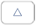 voor oplopende volgorde en 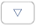
| Icoon | Sorteervoorwaarde en volgorde |
|---|---|
| Oplopende volgorde van tijdstempel | |
| Aflopende volgorde van tijdstempel | |
| 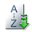 | Oplopende volgorde van bestandsnaam |
| Aflopende volgorde van bestandsnaam | |
| 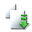 | Oplopende volgorde van bestandsgrootte |
| 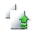 | Aflopende volgorde van bestandsgrootte |
| 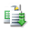 | Oplopende volgorde van bestandsformaat |
| 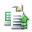 | Aflopende volgorde van bestandsformaat |
Zoeken van bestanden/ mappen
- Tik op de "Organiseer" knop op het hoofdscherm.
- Bestanden en mappen opgeslagen in de aplicatie worden in een lijst weergegeven.
- De sorteer knop en zoekbalk worden weergegeven in de bestanden / mappen lijst (voor het sorteren van bestanden / mappen, zie "Bestanden / Mappen lijst wijzigen").
- Voer de volledige bestandsnaam of een deel van de bestandsnaam die u wilt vinden in de zoekbalk. Een lijst met bestanden met de gezochte tekens worden weergegeven.
- Verder zoeken in het zoekresultaat kan worden uitgevoerd door te tikken op "Geavanceerd zoeken" rechts van de zoekbalk.
De volgende voorwaarden kunnen worden gespecificeerd voor geavanceerde zoekresultaten.Inclusief sub-mappen Voeg submappen toe aan de zoekopdracht Map Voeg mappen toe aan de zoekopdracht PDF Voeg PDF toe aan de zoekopdracht TIFF Voeg TIFF toe aan de zoekopdracht. Afbeelding (JPEG,PNG) Voeg JPEG en PNG toe aan de zoekopdracht - U kunt de weergegeven volgorde van de zoekresultaten wijzigen. Zie Wijzigen Bestanden/Mappen lijst.
Voorbeeldweergave van een bestand
- Tik op de "Organiseer" knop op het hoofdscherm.
- Bestanden en mappen opgeslagen in de aplicatie worden in een lijst weergegeven.
- Tik op een willekeurig document om een voorbeeldweergave te zien.
(Opmerking) Een voorbeeldweergave wordt niet getoond, indien het beschikbare geheugen onvoldoende is in uw mobiele apparaat.
Sommige bestandsformaten kunnen niets als voorbeeldweergave getoond of geroteerd worden. (zie de gebruikershandleiding). Wanneer u een voorbeeldweergave wenst, tik op "Bekijk met andere applicatie"om een applicatie te selecteren voor een voorbeeldweergave. - Gebruik twee vingers om in- of uit te zoomen op de voorbeeldweergave.
Tik op om de weergave 90 graden met de klok mee te draaien.
(Opmerking) De bestanden met de volgende formaten, kunnen geroteerd worden:- JPEG, TIFF, PNG, PDF gescand met Sharp scanners (uitgezonderd versleutelde PDF's)
Wijzig de naam van een bestand/map
- Tik op de "Organiseer" knop op het hoofdscherm.
- Bestanden en mappen opgeslagen in de aplicatie worden in een lijst weergegeven.
- Selectievakjes verschijnen aan de linkerkant van de lijst en de menubalk verschijnt onderin.
- Tik op het selectievakje van het bestand/ de map waarvan u de naam wilt veranderen, tik vervolgens op 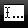 in de menubalk.
(Opmerking) U kunt de naam veranderen van slechts 1 bestand/ map in één handeling. - De melding met "Wijzig bestands-/ mapnaam" verschijnt en voer een nieuwe naam in.
Tik op "Opslaan" om de naam te wijzigen.
(Opmerking) Het bestandsformaat kan niet worden gewijzigd.
Verplaats bestanden/mappen
- Tik op de "Organiseer" knop op het hoofdscherm.
- Bestanden en mappen opgeslagen in de aplicatie worden in een lijst weergegeven.
- Selectievakjes verschijnen aan de linkerkant van de lijst en de menubalk verschijnt onderin.
- Tik op het selectievakje van het bestand/ de map dat u wilt verplaatsen (meerdere bestanden/mappen kunnen worden geselecteerd) en tik op 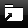 in de menubalk.
- De "Verplaats" dialoog wordt weergegeven. Selecteer de bestemmingsmap en tik op "Verplaats naar".
Verwijder bestanden/mappen
- Tik op de "Organiseer" knop op het hoofdscherm.
- Bestanden en mappen opgeslagen in de aplicatie worden in een lijst weergegeven.
- Selectievakjes verschijnen aan de linkerkant van de lijst en de menubalk verschijnt onderin.
- Tik op het selectievakje van het bestand/ de map dat u wilt verwijderen (meerdere bestanden/mappen kunnen worden geselecteerd) en tik op 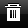 in de menubalk.
- De "Verwijder bestand(en)/map(pen)" dialoog wordt weergegeven. Tik op "OK" om de bestanden/mappen te verwijderen.
- In stap 2, schuif met de vinger over het bestand in de lijst en tik op "Verwijder".
- Tik op "Verwijder dit bestand" onderaan het voorbeeldweergavescherm.
Opmerking: Mappen kunnen niet worden verwijderd in deze handeling.
Maak een map aan
- Tik op de "Organiseer" knop op het hoofdscherm.
- Bestanden en mappen opgeslagen in de aplicatie worden in een lijst weergegeven.
- Ga naar de map waaronder u een nieuwe map wenst aan te maken, en tik vervolgens op de "Wijzig" button.
- Selectievakjes verschijnen aan de linkerkant van de lijst en de menubalk verschijnt onderin. Tik op 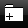 in de menubalk.
- De "Maak Map aan" dialoog wordt weergegeven. Voer een naam in voor de map.
Tik op "Opslaan" om de map aan te maken.
Printen vanuit een externe applicatie
De gestuurde data vanuit een andere applicatie op het apparaat kan geprint worden via deze applicatie.- Open het bestand dat u wenst af te drukken (JPEG, TIFF, PNG of PDF) in de andere applicatie.
- Voer de volgende handeling uit "verstuur het bestand naar een andere applicatie" in de applicatie. (zie de gebruikershandleiding van de betreffende applicatie voor details).
"Sharpdesk Mobile" wordt weergegeven als één van de applicaties die het bestand kan ontvangen. Tik dan op "Sharpdesk Mobile"
(Opmerking) Indien u deze applicatie gebruikt op iOS 4.3 tot en met 5, kunnen maximaal 9 applicaties in een lijst worden weergegeven. Indien de juiste applicatie niet in de lijst voorkomt, verwijder eventuele onnodige applicaties. - De rest van de handelingen zijn gelijk aan stap 5 van Print een opgeslagen document in deze applicatie.
Website voor ondersteuning
Voor meer details over deze applicatie, bekijk de volgende website:http://sharp-world.com/products/copier/docu_solutions/mobile/sharpdesk_mobile/index.html